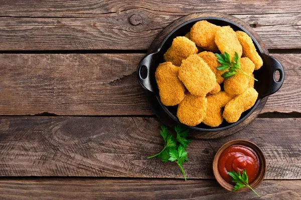

Chicken Nuggets
home

Chicken nuggets are crispy bite-sized pieces of chicken coated in breadcrumbs. They are baked until golden on the outside and tender on the inside. This recipe will guide you through the steps to make delicious homemade chicken nuggets for your family and friends.
- Chicken breast
- Flour
- Eggs
- Breadcrumbs
- Olive oil
- Preheat the oven to 425°F (220°C).
- Cut the chicken breast into two evenly sized bite-sized pieces.
- Place the flour in a shallow bowl and season with salt and pepper.
- Beat the eggs in a separate bowl.
- Place the breadcrumbs in a third bowl.
- Coat each piece of chicken in flour, dip it into the beaten eggs, and cover it with breadcrumbs.
- Place the coated nuggets on a lined baking tray and drizzle them lightly with olive oil.
- Bake for 20-25 minutes, turning halfway through, until golden and the chicken reaches an internal temperature of 165°F (74°C).
- Let the chicken nuggets cool slightly before serving with your favorite dipping sauce.